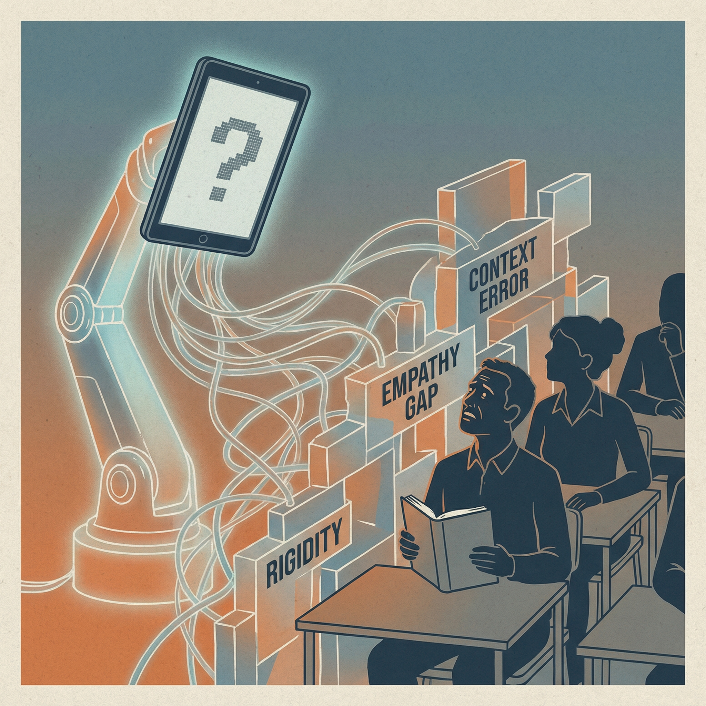

Encara que la IA ofereix oportunitats valuoses, també presenta limitacions i riscos que han de gestionar-se pedagògicament:

1. Errors factuals o lingüístics
La IA pot generar informació incorrecta o imprecisa. Això exigeix que tant professorat com alumnat verifiquen i corregisquen sistemàticament la informació abans d'usar-la en contextos formatius.
Una estratègia per a mitigar aquest problema seria la de promoure activitats d'avaluació crítica de respostes generades per IA, comparant amb fonts fiables, per exemple: en Claude cal verificar les dades clau de manera independent o activar la cerca web per obtenir informació actualitzada.
|
Exemple de errada factual Imagina que, com a docent, li demanes a la IA: "Genera un text curt de nivell A2 sobre les festes nacionals d'Espanya per treballar el vocabulari de les celebracions." La IA genera un text que inclou la frase: "El Día de la Hispanidad se celebra el 12 de octubre, que es lunes este año." El problema és que la IA pot indicar un dia de la setmana incorrecte, ja que no sap en quin any s'usarà el material. Si el docent usa el text tal qual a l'aula, l'alumnat pot aprendre una informació errònia que, a més, és fàcilment verificable. Què ha passat? La IA ha generat un detall concret —el dia de la setmana— que semblava cert però que no correspon a la realitat del moment en què s'utilitza el material. Com es pot detectar i corregir? Simplement comprova la dada en un calendari abans d'usar el text, o reformula el prompt per evitar el problema: "Genera el mateix text sense indicar el dia de la setmana en què cau la festa." Aquest és un error molt fàcil de passar per alt, especialment quan el text sembla ben escrit i natural. Recorda que la IA no produeix dades 100% reals: genera el que estadísticament és probable, no el que és necessàriament cert.. |
2. Biaixos culturals
Els models d'IA poden reflectir biaixos presents en les seues dades d'entrenament, la qual cosa pot traduir-se en exemples, metàfores o continguts culturalment poc pertinents o fins i tot discriminatoris.
Estratègia de mitigació: adaptar i contextualitzar continguts amb criteris culturals locals i diversos.
|
Exemple amb biaix (no adaptat) Quins problemes podem trobar?
Versió adaptada a persones adultes Millores:
|
3. Simplificacions excessives o material descontextualitzat
La IA moltes vegades resumeix o simplifica conceptes, la qual cosa pot desprendre continguts del seu context educatiu o sociocultural.
Estratègia de mitigació: dissenyar activitats que afigen context contextualitzat, complementant IA amb materials reals i exemples locals.
|
Exemple de material descontextualitzat: La carta de presentació per a buscar feina Un docent demana a la IA: "Genera un model de carta de presentació en espanyol de nivell B1 per a buscar feina." La IA genera una carta formalment correcta, però que inclou expressions com "Estimado/a responsable de Recursos Humanos", un to corporatiu elevat, referències a competències digitals avançades i una estructura pròpia d'un entorn professional qualificat. El problema és que l'alumnat adult que busca feina sovint opta a llocs de treball en sectors com la neteja, la hostaleria, la cura de persones o la construcció, on ningú espera ni llegeix cartes de presentació d'aquest tipus. El model generat per la IA respon a un context laboral que no és el seu. Què ha passat? La IA ha simplificat la realitat laboral a un únic model estàndard, descontextualitzat de les necessitats reals del grup. Com es pot corregir? Ajusta el prompt per apropar-lo a la realitat: "Genera un missatge breu i senzill de nivell A2-B1 per enviar per WhatsApp o correu electrònic a un restaurant per preguntar si necessiten personal de cuina o sala." Aquest exemple és especialment útil perquè mostra que la descontextualització no és només cultural, sinó també socialment significativa: usar el material inadequat pot generar frustració o sensació de inutilitat en l'alumnat. |
4. Dependència tecnològica
Existeix el risc que alumnat i docents desenvolupen dependència excessiva d'eines digitals, reduint la seua capacitat crítica, estratègies cognitives pròpies i autonomia real.
Estratègia de mitigació: alternar activitats amb tecnologia i activitats analògiques, fomentant la resiliència i la independència metodològica.
Referències
¿Cómo pueden los adultos distinguir entre hechos e información generados por IA?
{kind=link}
5. La desinformació i les fake news
La IA pot generar textos, imatges i àudios falsos de forma molt convincent la qual cosa té un impacte directe en l'alfabetització mediàtica i en l'adquisició de coneixements reals.
|
Estratègia de mitigació Convertir el risc en oportunitat pedagògica de forma que incorporem en els nostres recursos activitats d'alfabetització mediàtica on l'alumnat aprenga a identificar senyals d'alerta de contingut sintètic (mans amb dits de més o de menys, ombres incoherents, textos sense errors humans, veus sense respiració, dades que no apareixen en cap font fiable…). També cal ensenyar a recórrer a verificadors com Maldita.es o Newtral abans de reenviar res. . Exemple. Pocs dies després de la DANA, va circular per WhatsApp i xarxes socials una imatge molt emotiva: un nadó en braços d'un bomber, suposadament rescatat amb vida a Catarroja després de quatre dies atrapat. La fotografia es va viralitzar amb un text que explicava que la família encara no havia estat localitzada. Molta gent la va reenviar amb bona fe, convençuda que era real. No ho era: estava generada amb IA Com es pot detectar i corregir? Maldita.es va aplicar una rutina de verificació que es pot reproduir a l'aula com a activitat.
Aquesta seqüència —font → comparació → detalls visuals— funciona molt bé com a guió d'una activitat de comprensió lectora i expressió oral en nivells B1-B2 |